FMOD Studio User Manual 2.02
- Welcome to FMOD Studio
- FMOD Studio Concepts
- Organizing the Project
- Authoring Events
- Working with Instruments
- Managing Assets
- Parameters
- Getting Events into Your Game
- Mixing
- The Sandbox
- Editing During Live Update
- Profiling
- Dialogue and Localization
- Using Source Control
- Supporting Downloadable and User-generated Content
- Advanced Topics
- Automating Parameters
- Spatialization Options
- Auditioning Object Spatialization and Height Panning
- The Assets Folder
- Stealing and Virtualization
- Special Contents of the Master Bank
- Automation Curve Combination
- Play State
- Effect Chains
- Custom Window Layouts
- GUIDs and Paths
- User Properties
- FMOD Studio Command Line Tool
- Migrating FMOD Studio Projects
- Migrating FMOD Designer Projects
- Setting Up Different Audio Configurations for your Game
- Bank Encryption
- Anonymous Usage Data
- Quick Start Tutorial
- Event Macros Drawer Reference
- Instrument Reference
- Plug-in Reference
- Modulator Reference
- Parameters Reference
- Scripting
- Scripting API Reference
- Keyboard Shortcut Reference
- Troubleshooting
- Glossary
- Appendix: Celeste Getting Started Guide
- Appendix: Reaper Integration
16. Advanced Topics
16.1 Automating Parameters
There are three ways in which one parameter may be controlled by another parameter.
-
Linked Parameters - If a parameter is present in both a referenced event and in its parent event, each instance of the parent event shares its parameter value with each instance of the referenced event that it spawns. Linked parameters can be overridden by automating the event instrument's parameter property.
User parameters that are exposed recursively via event instruments are implicitly added to the parent events of any referenced events in which the parameter is present. For more information about recursively exposed user parameters, see the User Parameters section of the Parameters Reference chapter. -
Automated event instrument parameter properties - If an event has a parameter, a knob for that parameter appears in the deck of any event instrument that references that event. Like most other instrument properties, this parameter property can be automated in the event that contains the instrument. Automating a parameter property overrides the linked parameter behavior described above.
Automating a parameter in this fashion sets the base value of the parameter in the nested event instance to the final value of the parameter in the parent event instance. Because of this, a parameter whose set and final value are different (whether due to seek speed, modulation, or for any other reason) may have a final value in the nested event instance that differs from its final value in the parent event. -
Parameters automating parameters - The value of a preset parameter can be automated on another parameter. Global preset parameters can only be automated on other global parameters.
Any parameter based on a preset parameter is automated the same way as the preset parameter; when this occurs, the parameter and the parameter it is automated on appear in the same event.
16.2 Spatialization Options
Processing audio to seem as if it comes from a variable position in 3D space is called "spatialization." Spatialization helps create an immersive and realistic sounding world by making the audible positions of objects in your game better match what the player sees on their screen. It also allows your game to communicate information about the distance and direction of in-game objects to the player.
In FMOD Studio, spatialization is usually achieved through the use of effects: The FMOD spatializer effect, the FMOD object spatializer effect, and third-party plug-in effects such as the Resonance Audio source effect. Adding one of these effects to an event track spatializes the signal routed through that track, so it is common to add a single such effect to an event's master track to ensure that event's output is spatialized.
Because spatialization causes the output of the event to change depending on the event instance's position relative to the listener, adding a spatializing effect to an event makes that event 3D.
Some forms of spatialization can produce sound in surround 7.1.4 channel format, or require platform-specific object spatialization technologies to work. For information on auditioning object spatialized audio and 7.1.4 format sound in FMOD Studio, see the Auditioning Object Spatialization and Height Panning section of this chapter.
16.2.1 The FMOD Spatializer Effect
The FMOD spatializer effect is the default solution for spatialization, and suits the vast majority of events and games. It spatializes the signal passing through it by panning it according to the angle from the listener's direction of facing to the event instance, and it attenuates the signal according to the distance between the event instance and the listener.
In addition, the spatializer effect upmixes or downmixes its input signal to your target platform's surround speaker mode, so as to ensure consistent submixes throughout your project.
Unlike most other spatializing effects, the FMOD spatializer effect does not interrupt the signal chain of the track. The output of a spatializer effect is passed to the next effect or panner in the track's signal chain.
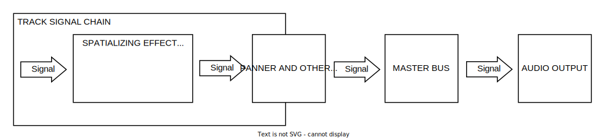
The panning applied to a signal by an FMOD spatializer effect makes it easy to distinguish the direction of event instances to the left or right of the listener, but is less effective at making event instances sound distinctly as if they're ahead of or behind the listener, and completely incapable of making sounds seem to come from above or below. Despite this, it is suitable for the vast majority of events and games.
16.2.2 The FMOD Object Spatializer Effect
The FMOD object spatializer effect is designed to work with platform-specific object spatialization technologies such as Dolby Atmos, DTS:X, Sony 3D Audio, and Windows Sonic. It functions by routing the signal and the event's 3D positional information directly to an object mixer, instead of through the tracks and buses into which the event would normally be routed. As a result, the signal does not encounter any effects or sends "downstream" of the object spatializer.
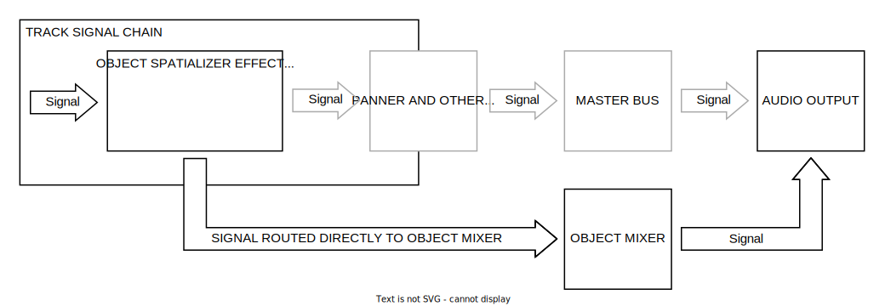
Because it is designed to take full advantage of platform-specific object spatialization technologies, the object spatializer can potentially spatialize audio more accurately than the spatializer effect does. However, as most platforms only support a limited number of object spatializers, it is best to use the object spatializer effect only in events that need highly accurate spatialization, and to use the spatializer effect in all other events.
Unlike the FMOD spatializer effect, the object spatializer does not automatically upmix the signal to your project's surround speaker mode. Instead, the output format depends entirely on the technology used. For example, an FMOD object spatializer effect can be used to spatialize content in surround 7.1.4 format, if that format is supported by the target platform's technology.
When running on a platform that does not feature specialized object spatialization technologies, an FMOD object spatializer effect instead functions as an FMOD spatializer effect, but still routes its signal directly to the mixer instead of through the normal routing path the event would otherwise follow.
For information about auditioning events that use the FMOD object spatializer effect, see the Auditioning Object Spatialization and Height Panning section of this chapter.
16.2.3 The Resonance Audio Source Effect
The Resonance Audio source effect is a third-party plug-in that functions in a manner similar to the FMOD object spatializer effect: It functions by routing the signal and the event's 3D positional information directly to a Resonance listener effect in your project's mixer instead of through the normal routing path the event would otherwise follow. As a result, the signal does not encounter any effects or sends "downstream" of the Resonance Audio source.
Unlike the FMOD spatializer effect, the Resonance Audio source does not automatically upmix the signal to your project's surround speaker mode. Instead, its output format is binaural stereo at the listener's position.
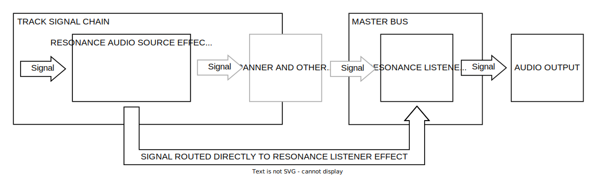
A Resonance Audio source effect requires there to be at least one Resonance Audio listener effect in your project's mixer. This effect is usually placed in the signal chain of the project's master bus, or in the signal chain of a group bus that routes into the master bus. Having more than one Resonance Audio listener effect in a project is not recommended, as it can result in choppy or distorted playback.
16.3 Auditioning Object Spatialization and Height Panning
While events spatialized using the FMOD spatializer effect can be auditioned in FMOD Studio without needing to make any special preparations, events spatialized using the FMOD object spatializer effect can only be auditioned if an object spatialization technology is present and correctly configured on the machine running FMOD Studio. If you attempt to audition events designed to make use of object spatialization in FMOD Studio without first configuring your project and machine to audition content of that type, the audition will reflect the behavior of FMOD's spatializer effect instead of that object spatialization technology.
Similarly, while content in most common channel formats can be auditioned in FMOD Studio without needing to make any special preparations, content in 7.1.4 format can only be auditioned if an appropriate technology is present and correctly configured on the machine running FMOD Studio. If you attempt to audition content in 7.1.4 channel format without first configuring your project and machine to play content of that type, the output will be downmixed to a different surround or stereo format.
This means that if you want to audition object spatialized events or 7.1.4 channel format sound in FMOD Studio, certain requirements must be met:
- Your project must contain content in 7.1.4 channel format, or which produces output in a format designed for object spatialization.
- Audio assets in 7.1.4 format naturally produce output in that format if used in instruments, and it is also possible to create 7.1.4 content using the output panner of tracks and buses set to 7.1.4 output, the FMOD channel mix effect, and certain plug-in effects. 7.1.4 format can be used by technologies such as Dolby Atmos and Windows Sonic.
- Events that contain FMOD object spatializer effects can be spatialized by a variety of object spatialization technologies, including DTS:X, Sony 3D Audio, and Windows Sonic.
- If your project's content is in 7.1.4 channel format and is routed into the project's master bus, the master bus' output format must be set to surround 7.1.4. To change your project's master bus output format, first navigate to the mixer window and select the master bus by clicking on it in the overview pane; then, in the deck, right-click on the output meters and select a new output format from the context menu.
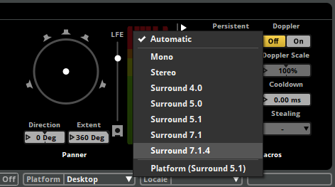 - You must be running FMOD Studio on Windows. This is because, while FMOD Studio can be used to create content for a variety of object spatialization technologies, Windows Sonic is the only such technology that supports auditioning events inside FMOD Studio, and Windows Sonic is not currently available on other operating systems.
- FMOD Studio's output device must be set to Windows Sonic. You can set the output device in the audio tab of FMOD Studio's preferences dialog.
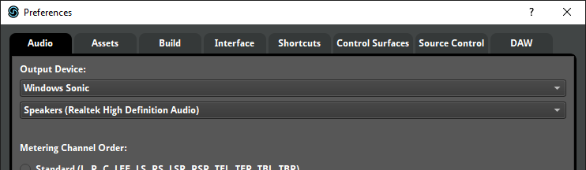 - Your machine must be configured to enable Windows Sonic. To enable Windows Sonic on Windows:
- Ensure that you are running Windows 10 Creators Update or later.
- Open the control panel, and click on the sound icon. (If the sound icon does not appear, click on the hardware and sound category.)
- In the playback tab of the sound window, right-click on your default audio device to open the context menu, then select "properties."
- In the spatial sound tab of the properties window for your default audio device, open the spatial sound format dropdown menu and select "Windows Sonic" or "Windows Sonic for Headphones."
- Click the OK button or the apply button to confirm the change.
Different object spatialization technologies spatialize sound in different ways. Accordingly, while auditioning with Windows Sonic allows you to hear the effects of spatialization in FMOD Studio, it may not sound identical to auditioning in your game if your game uses a different object sptialization technology.
16.4 The Assets Folder
Your FMOD Studio project's assets folder contains audio files and other files used in its events. The contents of the assets folder are displayed in the assets browser.
Whenever you import a file into your project, that file is automatically copied into your project's assets folder. Imported files can be used in instruments, and are included as sample data in your project's banks when you build the project.
It is possible to play files not imported into your project at runtime by using programmer instruments. For information about programmer instruments, see the Dialogue and Localization chapter.
If your team is using source control, and the "Enable source control integration for assets" checkbox in the source control tab of the preferences dialog is not checked, changes made to files in your project's assets folder are not automatically synced between members of your team when you sync your project.
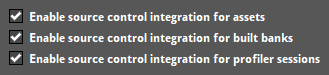
For more information about using assets folders with source control, see the Using Source Control chapter.
16.4.1 Using an External Assets Folder
By default, your project's assets folder is the Assets subdirectory of your FMOD Studio project folder. You can change your assets folder by specifying a different relative or absolute path in the assets tab of the preferences dialog.
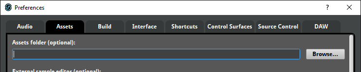
Changing your assets folder to an external directory allows you to store your audio assets separately to your FMOD Studio project. This may be useful if your team stores its audio assets on a shared network drive.
However, if your FMOD Studio project is moved to a different machine but the external assets folder is not moved with it, or if your project's assets folder uses a relative path and the project is moved to a different directory without also moving its assets folder, your project will no longer have access to the assets in that folder. Assets lost in this manner are marked as "#missing" in the assets browser.
Setting your project's assets folder to a network drive may result in poor performance and errors, depending on your network's available bandwidth and latency.
It is not safe to set your project's assets folder to a path that contains files used in other projects. Working on an FMOD Studio project frequently results in changes to the project's asset files, potentially making those files inaccessible to other projects. Conversely, changes made to those files by other projects may make those files inaccessible to your FMOD Studio project. In addition, keeping files not needed by an FMOD Studio project in that project's assets folder can result in slower performance.
If your team is using source control, each member may set their asset directory to a different path. If your team's reason for using external asset folders is to reduce the size of the project on disk or in your source control repository, make sure that every member of your team uses an external assets folder. If one user stores files in the project folder's Assets subdirectory, those files are automatically added to the repository whenever the project is synced, and so contribute to the project's size even if all other users' assets folders are in different locations.
For more information about using assets folders with source control, see the Using Source Control chapter.
16.5 Stealing and Virtualization
The virtual voice system limits and controls the number of event instances played at the same time. Instance limits can be set on individual events and on mixer buses.
Limiting the number of event instances in play at one time provides a less cluttered listening experience for the player and allows you to keep the audible focus on important game items or events. It also gives the added benefit of resource management, putting less strain on the player's machine.
Each event and group bus has a stealing property that determines which event instances should be stopped or virtualized when the number of playing instances would otherwise exceed its max instances property.
16.5.1 Stealing
Whenever playing a new event instance would cause the number of simultaneous instances to exceed an event or bus's max instances property, FMOD follows the stealing behavior associated with that event or bus. Stealing an event instance either stops it, prevents it from playing, or virtualizes it.
A bus or event's stealing behavior can be set to one of the following:
- Oldest: Stop the event instance that was started the longest time ago.
- Quietest: Stop the event instance that is the least audible, taking distance attenuation into consideration.
- Furthest: Stop the event instance that is the furthest away from the listener, regardless of its volume.
- None: No stealing occurs, therefore no new event instances can be played until an existing event instance stops.
- Virtualize: (Event Only) The quietest event instance is virtualized, meaning it continues to play but produces no output until an existing event instance stops or it is no longer the quietest event instance to the listener.
16.5.2 Virtualization
A virtualized event instance is an event instance that is playing but produces no audio. When an event is no longer virtual and starts producing audio again, it is known as becoming "real". Virtualization always steals the quietest event instance.
Unlike other stealing behaviors, virtualization does not stop any existing event instances. The master track of a virtualized event instance is muted but the playback position continues advancing. The event becomes real when it is no longer the quietest event instance in play. Because the playback position is still advancing through the event, when it becomes real it is as if the event was never muted, giving the illusion of simply being out of earshot. All behaviors within the virtualized event instance, such as parameters, automation, conditions being met, and instruments triggering perform as normal.
It is important to note that FMOD Studio events create Channels in order to play audio. Each single instrument and programmer instrument playing counts as a Channel, and each playlist entry playing in multi instruments, scatterer instruments, and the relevant contents of an event instrument count as a Channel. These Channels also have the ability to go virtual or real, which can cause parts of the event to go silent if the maximum voice limit has been reached. You can avoid situations like this by allocating priorities to each event as needed. Also note that an event instrument does not inherit its parent event's priority and needs to have its priority set to match the parent to avoid the aforementioned partial virtualization.
If the FMOD Engine is initialized with the FMOD_INIT_VOL0_BECOMES_VIRTUAL flag, Channels automatically go virtual when their audibility drops below vol0virtualvol.
For more information on the virtualization, see the virtual voice system section of the FMOD Engine User Manual.
How audibility is calculated
Virtualization and quietest stealing behaviors steal the least audible event instances. The audibility level is calculated with the following variables:
- The event instance's volume set via Studio::EventInstance::setVolume.
- The event's master track volume set in FMOD Studio, including fades, automation, and modulation.
- Attenuation from the event's spatializer effect.
16.6 Special Contents of the Master Bank
In order for the FMOD Engine to play events, at least one master bank needs to be loaded at all times in your game's code.
Master banks contain the global mixer for your FMOD Studio project. The global mixer includes all of the group buses, return buses, VCAs, and snapshots for the given project.
Most importantly, master banks contain the master bus for the project. Since the master bus will output to the machine's speakers, anything that does not go through the global mixer will not be output to the speakers. Due to this, the master bank must be loaded at all times in order for all events to be audible.
Master banks can also have events assigned to them. In this case, the master bank also contains those events and their referenced sample data. Your game code can access these events the same way as any other bank.
16.7 Automation Curve Combination
As mentioned in the Authoring Events chapter, when a property is automated on multiple parameters, the values assigned to that property by each automation curve are combined to determine the value to which the property is set.
The exact method by which the values are combined depends on the property being automated, as shown in the following table.
| Property Type | Combination Method | Examples |
|---|---|---|
| Properties measured in percentages | Curve values are multiplied to produce the combined value | Snapshot's intensity macro control Snapshot instrument's Intensity |
| The lowest curve value is used as the combined value | Compressor effect's Threshold Lowpass effect's Cutoff Reverb effect's High Cut |
|
| Properties measured in dB that go as low as -∞ dB | If any curve value is -∞, the combined value is -∞; otherwise, curve values are summed to create the combined value | Track fader's Volume Bus fader's volume Compressor effect's Gain Multiband Eq effect's Gain Parametric Eq effect's Gain |
| Track panner properties other than height, extent, and LFE Spatializer effect's pan override drawer's properties other than extent |
Curve values are summed to create the combined value | Track panner's Direction Track panner's Axis Track panner's Stereo Separation Track panner's Height |
| Compressor effect's Ratio Chorus effect's Depth Chorus effect's Mix Delay effect's Feedback Highpass effect's Cutoff Highpass effect's Resonance Highpass Simple effect's Cutoff Lowpass effect's Cutoff Lowpass effect's Resonance Lowpass Simple effect's Cutoff Spatializer effect's pan override drawer's Extent Spatializer effect's pan override drawer's Mix Any instrument's Start Offset Scatterer instrument's Spawn Total Scatterer instrument's Spawn Rate Track panner's Extent |
The highest curve value is used as the combined value | |
| Other properties | Curve values are averaged to create the combined value | Compressor effect's Ratio Chorus effect's Depth Chorus effect's Mix |
16.8 Play State
The play state of an event instance is what that instance is currently doing: Whether it is currently playing, paused, stopping, or stopped. The play state of an event instance influences how and when it is loaded into memory, the amount of memory it consumes, and the number of voices it requires. As such, a detailed understanding of play states can help you improve your game's performance.
Each play state is associated with certain behaviors.
A playing event instance outputs to the mixer. Its timeline playback position automatically advances until it encounters a sustain point. If one of its parameters is set to a new value, that parameter's playback position changes to the new value at a rate defined by that parameter's seek speed. If any of its parameters have velocity, the playback positions of those parameters automatically advance.
A playing event instance can be made to enter the paused, stopping, or stopped play states. A playing instance of a non-persistent event automatically enters the stopped play state if there is no content to the right of its timeline playback position and no instruments in that event instance are currently producing output.
A paused event instance does not produce output, but continues to consume system resources as if it were playing. The playback positions of its timeline and parameters do not automatically advance. If one of its parameter values is changed, that parameter's playback position is updated when the event instance is next unpaused. An event instance that was paused while stopping resumes stopping when unpaused.
A paused event instance can be unpaused, which causes it to enter the play state it was in prior to being paused. Immediately stopping a paused event instance causes it to enter the stopped play state.
A stopping event instance behaves identically to a playing event instance, except that the release periods of AHDSR modulators on the event's properties are applied to those properties, and that the event instance automatically enters the stopped play state once all of those release periods are completed and the tails from all its reverb and delay effects have played out.
A stopping event instance can be made to enter the paused or stopped play states. A stopping event instance automatically enters the stopped play state once the release periods of all AHDSR modulators on the event's properties are completed.
A stopped event instance does not produce output. Its playback positions do not automatically advance. If its parameter values are changed, the playback positions of those parameters instantly move to their new positions.
A stopped event instance can be made to enter the playing play state.
16.8.1 Play State and FMOD_STUDIO_PLAYBACK_STATE
The play states used for the purposes of sound design in FMOD Studio differ slightly from the "playback states" used by FMOD_STUDIO_PLAYBACK_STATE in the FMOD Studio API. To convert from FMOD Studio play states to FMOD Studio API playback states, see below.
| FMOD Studio play state | Equivalent FMOD_STUDIO_PLAYBACK_STATEs | Notes |
|---|---|---|
| Playing | FMOD_STUDIO_PLAYBACK_PLAYING |
An event instance that is currently playing is in the FMOD_STUDIO_PLAYBACK_PLAYING playback state. |
| Paused | FMOD_STUDIO_PLAYBACK_PLAYINGFMOD_STUDIO_PLAYBACK_SUSTAININGFMOD_STUDIO_PLAYBACK_STOPPING |
Pausing event instances is handled via Studio::EventInstance::getPaused and Studio::EventInstance::setPaused, rather than FMOD_STUDIO_PLAYBACK_STATE. As such, an event instance that is paused has the same FMOD_STUDIO_PLAYBACK_STATE it had when unpaused. |
| Stopping | FMOD_STUDIO_PLAYBACK_STOPPING |
An event instance that has been told to stop, but which is in the process of playing out its AHDSR modulator release periods before it stops completely, is in the FMOD_STUDIO_PLAYBACK_STOPPING playback state. |
| Stopped | FMOD_STUDIO_PLAYBACK_STOPPED |
Events that are currently stopped are in the FMOD_STUDIO_PLAYBACK_STOPPED playback state. |
To convert from FMOD Studio API playback states to FMOD Studio play states, see below.
| FMOD_STUDIO_PLAYBACK_STATE | Equivalent FMOD Studio play states | Notes |
|---|---|---|
FMOD_STUDIO_PLAYBACK_PLAYING |
Playing Paused |
Pausing an event instance does not change its FMOD_STUDIO_PLAYBACK_STATE, so an event instance in the FMOD_STUDIO_PLAYBACK_PLAYING state is in that state even if it is also paused. |
FMOD_STUDIO_PLAYBACK_SUSTAINING |
Playing Paused |
Sustain points change an event instance's FMOD_STUDIO_PLAYBACK_STATE, but not its play state in FMOD Studio. Pausing an event instance does not change its FMOD_STUDIO_PLAYBACK_STATE, so an event instance in the FMOD_STUDIO_PLAYBACK_SUSTAINING state is in that state even if it is also paused. |
FMOD_STUDIO_PLAYBACK_STOPPED |
Stopped | |
FMOD_STUDIO_PLAYBACK_STARTING |
N/A | There is no FMOD Studio play state equivalent to the FMOD Studio API's FMOD_STUDIO_PLAYBACK_STARTING playback state. |
FMOD_STUDIO_PLAYBACK_STOPPING |
Stopping Paused |
Pausing an event instance does not change its FMOD_STUDIO_PLAYBACK_STATE, so an event instance in the FMOD_STUDIO_PLAYBACK_STOPPING state is in that state even if it is also paused. |
For more specific information about FMOD_STUDIO_PLAYBACK_STATE and playback states in the FMOD Studio API, see FMOD_STUDIO_PLAYBACK_STATE in the FMOD Engine User Manual.
16.9 Effect Chains
An effect chain is a special type of preset effect that contains its own signal chain of other effects, sends, and sidechains. Putting a frequently-used series of effects into an effect chain makes it easier to use that series in multiple places throughout your project.
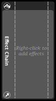
You can add an effect chain to your project by right-clicking on the effects browser and selecting "New Preset > New Effect Chain" from the context menu. In addition, you can convert an existing preset effect into an effect chain containing that effect by right-clicking on the preset effect in the effects browser and selecting "Wrap in Effect Chain" from the context menu. You can also create a new effect chain by selecting a track in the event editor window, right-clicking on the deck, and selecting "Add Effect Chain" from the context menu.
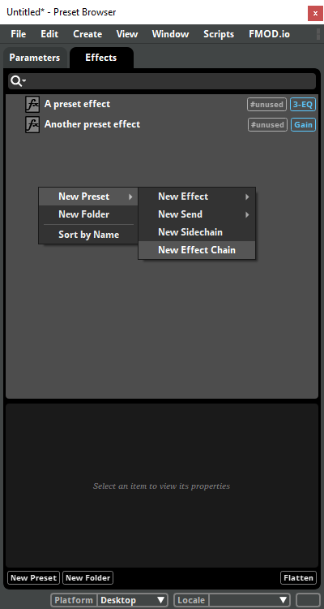
All instances of an effect chain have the same effects, sends, and sidechains, with the same property settings, including any automation and modulators. Because the properties of effects and sends in an effect chain can be subject to automation and modulation, it is possible for different instances of an effect chain to have different current property values. If an effect chain makes use of user parameters or built-in parameters (for example, for automation), those parameters are automatically added to every event that contains an instance of that effect chain.
You can add effects, sends, and sidechains to an effect chain by right-clicking on the effect chain in the deck and selecting "Insert Effect," "Insert Send," or "Insert Sidechain" from the context menu. In addition, if viewing the deck of a track that contains an effect chain in the event editor window, you can click and drag effects, sends, and sidechains from elsewhere in the signal chain onto an effect chain to add them to that effect chain. Preset effects, sends to return tracks in events, and other effect chains cannot be added to effect chains.
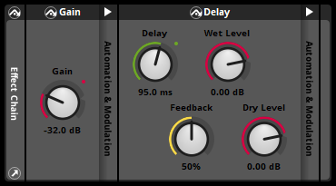
You can remove effects, sends, and sidechains from an effect chain by right-clicking on them and selecting "Delete" from the context menu. In addition, if viewing the deck of a track that contains an effect chain in the event editor window, you can click and drag an effect, send, or sidechain from inside the effect chain to a position elsewhere in the deck to remove it from that effect chain. Alternatively, if there is only one effect in an effect chain, you can remove the effect chain from the preset effect by right-clicking on the preset effect in the effects browser and selecting "Unwrap Effect Chain" from the context menu.
You can change the order of effects, sends, and sidechains in an effect chain by clicking and dragging them to new positions.
Editing any effect chain anywhere in your project affects every instance of that effect chain throughout your project. If you want to make changes to the contents of an effect chain without affecting other instances of that effect chain elsewhere in your project, right-click on the effect chain and select "Detach from preset." This replaces that instance of the effect chain with a series of effects, sends, and sidechains identical to the effects, sends, and sidechains in that effect chain, but which are not linked to the preset effect.
16.10 Custom Window Layouts
By default, whenever you load a saved project, FMOD Studio automatically reopens the same collection of windows that was open when you closed that project. Similarly, whenever you're working on an FMOD Studio project and re-open a window that you previously closed while working on that project, FMOD Studio automatically restores that window to the same size and position on your screen that it had prior to being closed. These features allow you to customize your workspace to suit your preferred workflow.
You can change or disable these behaviors with the "When opening a project" and "Window management" settings in the interface tab of the preferences dialog.
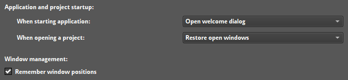
Window layout information is stored locally, and is not submitted to your source control repository. This means that when you're collaborating with other people on the same FMOD Studio project, each of you can have a different custom window layout.
16.11 GUIDs and Paths
In order to access items within your FMOD Studio project in game code, you need to identify those items either by name and path, or by GUID.
Items within your project that use GUIDs and paths will be referred to as "objects" in this section.
Some of these objects can have their GUID or path copied to the clipboard. Objects within your project that you can copy GUIDs and paths from include:
To find the GUID or path of an object in your project, right click on it and select "Copy GUID" or "Copy Path" then paste it into the text editor of your choice. You can also drag and drop it onto the search bar or onto a text editor to automatically paste its GUID and path.
16.11.1 GUIDs
All objects within your FMOD Studio project contain identifiers known as GUIDs. A GUID is a "Globally Unique Identifier." Each GUID is a unique series of characters and numerals associated with an object within your FMOD Studio project, which may be used to identify that object. This means an object created in the same location multiple times has a completely different GUID each time. For example, if the event "Situation_Oriental" at event:/Music/Complex/Situation_Oriental is deleted and replaced by another event with the same name, both events have the same path but they have two different GUIDs.
Note that not all objects within your project that have GUIDs will have the "Copy GUID" option within their context menu.
As well as the previously mentioned "Copy GUID" option in the context menu, you can also find the GUID of an object using ManagedObject.id in script.
The FMOD Studio API can only identify an event by name and path if the strings.bank file is loaded. If your game does not load the strings.bank file, you need to use GUIDs to access your events.
16.11.2 Paths
A path is the unique location of an object within your FMOD Studio project.
Paths are the most common method of accessing an event in game code.
Paths include the hierarchical structure, such as folders, snapshot groups, or group buses, as well as the name of the object you are referencing, such as the bus name, event name, etc. For example, the event path for the "Situation_Oriental" event in the examples project is event:/Music/Complex/Situation_Oriental.
Unlike with GUIDs, a path is not uniquely created for each instance of an object in your project. For example, if you deleted the above "Situation_Oriental" event, then created a new one with the same name, any game code referencing event:/Music/Complex/Situation_Oriental will still work, accessing the newly created event.
Using paths in your game code rather than GUIDs makes it easier to understand which object is being accessed. Note that in order to use paths in your game code, you will need to load the strings.bank file.
16.11.3 Using GUIDs and Paths
In your game code, you can use GUIDs and paths to get events, buses, and other such objects.
// Retrieving an event via the path
FMOD::Studio::EventDescription* explosionDescription = NULL;
ERRCHECK( system->getEvent("event:/Explosions/Single Explosion", &explosionDescription) );
// You can also use getEvent() to retrieve snapshots
FMOD::Studio::EventDescription* snapshotDescription = NULL;
ERRCHECK(system->getEvent("snapshot:/IngamePause", &snapshotDescription));
// Retrieving a bus via its GUID
FMOD::Studio::Bus* sfxBus;
ERRCHECK( system->getBus("{d320eb98-3d4a-4cd9-a001-fdb4e071c58e}", &sfxBus));
For more information on using GUIDs and paths when dealing with events in game code, please see the Studio::System::getEvent and Studio::System::getEventByID sections of the FMOD Engine User Manual.
When using FMOD Studio scripting, you can view the GUID of any object by using ManagedObject.id. An object can be looked up by GUID or path using project.lookup.
var myEvent = studio.project.lookup("%GUID%"); // Replace %GUID% with the GUID of your event.
16.12 User Properties
Events can have user properties. User properties are variables defined by you or other users of FMOD Studio, and which can be checked by your game's code. User properties are most commonly used to mark events for special treatment by your game.
Each user property has a name and a value. The name of a user property is always a string of letters and/or numbers, while the value of a user property may be either a string or a floating point number. If the value of a user property is a number, FMOD Studio automatically sets the type of the user property to floating point. Similarly, if the value of the user property contains any non-numeric characters, FMOD Studio automatically sets the type of the user property to string.
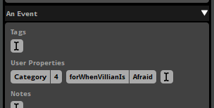
To add a user property to an event, first select the event in the event editor window's events browser to see its user properties in the overview pane. Click on the last user property to prepare it for text entry, type a name for the property, press 'Enter,' then type a value for the property.
You can edit an existing user property by clicking on its name or value, then typing a new name or value.
Once an event with user properties has been built into a bank, your game's code can use Studio::EventDescription::getUserProperty, Studio::EventDescription::getUserPropertyByIndex, and Studio::EventDescription::getUserPropertyCount to check the user properties of an event.
User properties cannot be automated or modulated, and cannot be changed at run time.
16.13 FMOD Studio Command Line Tool
FMOD Studio comes with a command line tool. It can be found in the following locations:
- Windows:
C:\Program Files\FMOD SoundSystem\FMOD Studio - Mac:
%app_bundle%/Contents/MacOS- The%app_bundle%is the "FMOD Studio.app" file in the installation folder.
On a 64 bit Windows OS with a 32 bit installation of FMOD Studio, this path will be C:\Program Files (x86)\FMOD SoundSystem\FMOD Studio.
In order to navigate into the app bundle on a Mac, run cd FMOD\ Studio.app/ when in the installation folder.
Open the command prompt in Windows, or the Terminal on Mac, and navigate to the folder FMOD Studio is installed in. Once in the correct directory, you can run the FMOD Studio command line tool. On both operating systems simply run fmodstudio followed by one or several options and the the path to a project .fspro file.
The following options are valid:
-build- Build mode for command line tool. If-banksor-platformsis not specified, builds all banks to all platforms set in the preferences dialog.-banks %bank_names%- Comma-separated list of banks to build. Must be in build mode. (Optional)-platforms %platform_names%- Comma-separated list of platforms to build. Must be in build mode. (Optional)-export-guids- Exports event GUIDs and mixer GUIDs to text files. Must be in build mode. (Optional)-shared-audio-source-dir %path%- Overrides the project's assets folder path with the specified path. Must be in build mode. (Optional)-ignore-warnings- Continue building if warnings are detected. Must be in build mode. (Optional)
-diagnostic- Runs validation check on the project for potential corruptions and errors-script %path_to_script_file%- Javascript file path to run. The file path can be relative to the working directory or an absolute file path. For more information, see the chapter on FMOD Studio's Scripting API.-help- Displays usage information for command line tool.%path_to_project%- Path to a project .fspro file. The file path can be relative to the working directory or an absolute file path. Must be last in the command.
16.13.1 Examples
fmodstudio -build foobar.fspro # Builds all banks for all platforms for the project "Foobar"
fmodstudio -build -banks "Master, SFX, Music" foobar.fspro # Only builds the banks "Master", "SFX", and "Music" for all platforms for the project "Foobar"
fmodstudio -build -banks "Master" -platforms "Desktop" foobar.fspro # Only builds the "Master" for the desktop platform for the project "Foobar"
fmodstudio -build -platforms "Desktop, XboxOne, PS4" foobar.fspro # Builds all banks for only desktop, Xbox One, and PS4 for the project "Foobar"
fmodstudio -build -banks "Master, Dialog" -ignore-warnings foobar.fspro # Only builds the banks "Master" and "Dialog", ignoring all warnings for the project "Foobar"
fmodstudio -build -banks "Master, Dialog" -export-guids foobar.fspro # Only builds the banks "Master" and "Dialog", exporting the GUIDs for both text file for the project "Foobar"
fmodstudio -build -shared-audio-source-dir "C:/audio assets" foobar.fspro # Builds all banks to all platforms using a custom assets folder for the project "Foobar"
fmodstudio -script foo.js foobar.fspro # Runs the script "foo.js" in the project "Foobar"
fmodstudio -diagnostic foobar.fspro # Runs diagnostics against the project "Foobar"
16.14 Migrating FMOD Studio Projects
Moving projects between major versions of FMOD Studio usually requires a project migration. When opening a project created using an earlier version, you will be prompted to migrate it.

This process may take a considerable amount of time, depending on the size of your project and the version. While the migration process is non-destructive, meaning nothing is overwritten until the project is saved, it is highly recommended to make a backup of the project prior to starting the migration process.
Once you have migrated and saved, you will not be able to load the project using earlier versions of Studio.
If you migrate your project to a new version of FMOD Studio, you may need to update the version of the FMOD Engine used by your game. FMOD version numbers are split into three parts, in the format: productVersion.majorVersion.minorVersion. The built bank files produced by a version of FMOD Studio are compatible with any version of the FMOD Engine with the same major and product version numbers. For example, a bank built in FMOD Studio version 2.00.03 is compatible with FMOD Engine versions 2.00.03, 2.00.00, and 2.00.10, but not with versions 1.10.14, 1.00.03, and 2.01.03.
16.14.1 Working with Teams
If there are multiple users working on your project, you should appoint one person to manage the migration. Before migrating, all users should commit their outstanding changes to the version control server. If instead you are using a shared drive or cloud storage, you should ensure that the version of your project on the drive or cloud storage includes all users' outstanding changes. Once all changes are committed, the migration manager should retrieve the project and perform the migration. After the project has been migrated and saved, the migration manager should commit the updated version of the project to the version control server. For other forms of project sharing that do not keep track of the file changes (e.g. a shared drive or cloud storage), the project directory should be replaced with the newly migrated one such that any obsolete files are removed.
16.15 Migrating FMOD Designer Projects
FMOD Studio supports migrating FMOD Designer projects to the FMOD Studio project format. The migration process can be started by using the "File > Open..." dialog and selecting an FMOD Designer project or an FMOD Designer workspace.
For titles consisting of multiple FMOD Designer projects, the projects should first be added to an FMOD Designer workspace which can be migrated as a whole. Migrating an FMOD Designer workspace ensures common categories in the associated FMOD Designer projects are consolidated and the events are assigned accordingly.

16.15.1 Unsupported Features
Most elements of an FMOD Designer project are migrated to FMOD Studio in some form. However, there are some features that are currently not supported and as such will not be preserved or migrated across.
Music
The music system in FMOD Designer is currently not supported by the migration process.
Effects
The following effects are currently not supported or only partially supported by FMOD Studio. As such, the effect and any of its related envelopes may not be migrated across.
- 3D Pan Level: FMOD Studio currently does not support per track panning. The envelope of the layer first from the top will be migrated to the master track and the rest would be ignored.
- Pan: Not supported.
- Surround Pan: Not supported.
- 3D Speaker Spread: Not supported.
- Speaker Level: Not supported.
- Spawn Intensity: Partially supported. Range is clamped to between [0 - 5] as part of the migration, which translates to [0% - 500%] in FMOD Studio.
- FMOD IT Lowpass: Not supported.
- FMOD Delay: Not supported.
- FMOD Normalize: Not supported.
- FMOD Chorus: Not supported.
- SFX Reverb: Not supported.
Event Properties
- Spawn Intensity Randomization: Not supported.
- Priority: Not supported.
- Max Playbacks:
- [1 - 64]: Migrated and value is preserved.
- [65 - ∞]: Migrated to ∞.
- Max Playbacks Behavior:
- Steal newest: Not supported and migrated as just fail.
- Just fail if quietest: Not supported and migrated as just fail.
- 3D Position:
- Head relative: Not supported.
- 3D Min Position Randomization: Not supported.
- 3D Max Position Randomization: Not supported.
- 3D Speaker Spread: Not supported.
- Use Template: Not supported.
Layer Properties
- Priority: Not supported.
Sound Def Properties
The following properties of a sound def are currently not supported or partially supported. For more information about play mode behavior in FMOD Studio, refer to the description of a multi instrument.
- Play Mode:
- Sequential Event Restart: Migrated and behavior is preserved.
- Sequential: Not supported and migrated as sequential event restart.
- Random: Migrated and behavior is preserved.
- Random No Repeat: Migrated and behavior is preserved if all items in list have equal weighting.
- Shuffle: Migrated and behavior is preserved if all items in list have equal weighting.
- Programmer Selected: Not supported and migrated as sequential event restart.
- Shuffle Global: Not supported and migrated as random.
- Sequential Global: Not supported and migrated as sequential event restart.
- Pitch Randomization Behavior:
- Randomize When Event Starts: Not supported.
- Play Count:
- [0 - 32]: Migrated and value is preserved.
- [32 - ∞]: Migrated as a capped value of 32.
- 3D Min Position Randomization: Not supported.
- 3D Max Position Randomization: Not supported.
Parameter Properties
-
Loop Behavior:
- Oneshot and stop event: Not supported.
- Loop: Not supported.
-
Special behaviors:
- Keyoff on silence: Not supported.
Sustain Points
FMOD Studio currently only supports sustain points on the timeline, and so any FMOD Designer parameter with sustain points will be migrated to a timeline. The migration process also requires the parameter with sustain points to have non-zero velocity. If an FMOD Designer event contains multiple parameters with sustain points, the sustain points for the first parameter from the top will be migrated across and the rest of the sustain points will be ignored.
16.16 Setting Up Different Audio Configurations for your Game
It is common in games to allow players to select the type of audio configuration they wish to use. This allows for a more specialized mix based on how the player is listening to the game. For example, if a setup lacks a subwoofer it might require a bass boost, or a mobile phone speaker might benefit from collapsing the mix down to mono. Creating custom audio configurations not only allows for output-specific mixing for the best audio experience but can also be used to customize resource costs on a per-configuration basis.
It is possible to set up these configurations by utilizing FMOD Studio's ability to build content for multiple platforms, exclude content from certain platforms, and separate the project's metadata from its assets when building banks.
16.16.1 Supporting Multiple Speaker Configurations
The build platform list in the preferences dialog can have multiples of the same platform. Each duplicate of a platform can represent a different hardware configuration for that platform. For example, in the build tab of the preferences dialog, you can have this setup:
- PC Headphones (Desktop) - Stereo surround speaker mode
- PC Surround Sound (Desktop) - Surround 7.1 surround speaker mode
- PC TV Speakers (Desktop) - Stereo surround speaker mode
- Xbox Headphones (Xbox One) - Stereo surround speaker mode
- Xbox Surround Sound (Xbox One) - Surround 7.1 surround speaker mode
- Xbox TV Speakers (Xbox One) - Stereo surround speaker mode
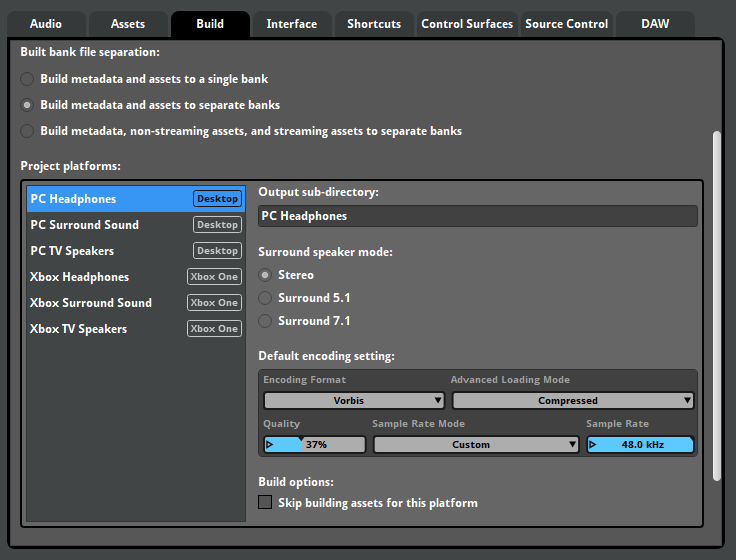
16.16.2 Platform Exclusion
By utilizing the platform exclusion features on certain effects or tracks, it is possible to apply output configuration specific mixing to those platforms. For example, a multiband EQ can be used on the master bus to boost the bass for TV speakers, whilst a channel mix effect can be included on the headphones to reduce the amount of LFE signal.
Right click on an audio track or an effect and select "Include on...". From this sub-menu you can choose which platforms to include or exclude it from. Audio tracks and effects that have exclusion properties set will display a plus and minus icon on them.
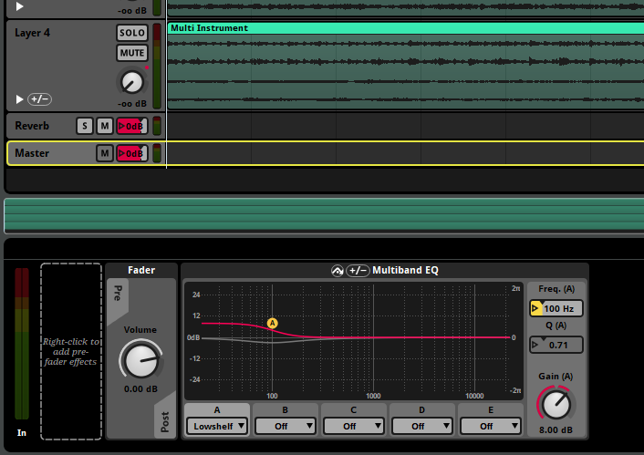
Certain effects alter the channel format of a signal at their positions in the signal chain. Excluding these effects from platforms prevents them from altering the signal on that platform, but does not prevent them from changing the channel format of the signal. For example, if a platform's surround speaker mode is set to surround 5.1, a spatializer effect will automatically upmix the signal to surround 5.1 format on that platform, even if those spatializer effects are excluded from that platform. Effects that can alter the channel format include the FMOD Convolution Reverb, FMOD Channel Mix, FMOD Panner, FMOD Spatializer, FMOD Transceiver, and Resonance Audio Soundfield effects.
At the bottom right corner of every FMOD Studio window is the platform dropdown menu. By changing the platform from this dropdown menu you can hear how that output configuration sounds in the game.
16.16.3 Separating Metadata and Assets in Built Banks
By default, FMOD Studio bundles both the asset and metadata into the same bank file each time you build banks for a platform. When using multiples of the same platform, having the duplicates of your assets can take up unnecessary space. By separating the metadata and the assets, one set of asset banks can be shared between platforms. To separate the metadata and assets, enable the "Build metadata and assets to separate banks" option in the build tab of the preferences dialog.
With this option enabled, two of every bank for each platform is built - one for the metadata and one for the assets. Since the assets are identical between output configurations only one set of assets.bank files are required for the target platform in your game project.
For example, you could move the asset banks to be used by multiple platforms into folders separate to the platform-specific metadata banks, producing a folder structure like this:
├─PC Asset Banks
│ Master.assets.bank
│ Music.assets.bank
│ SFX.assets.bank
│
├─PC Headphones
│ Master.bank
│ Master.strings.bank
│ Music.bank
│ SFX.bank
│
├─PC TV Speakers
│ Master.bank
│ Master.strings.bank
│ Music.bank
│ SFX.bank
│
├─Xbox Assets
│ Master Bank.assets.bank
│ Music.assets.bank
│ SFX.assets.bank
│
├─Xbox Headphones
│ Master.bank
│ Master.strings.bank
│ Music.bank
│ SFX.bank
│
└─Xbox TV Speakers
Master.bank
Master.strings.bank
Music.bank
SFX.bank
Using the above example, you could load the assets.bank files once, and then load the necessary metadata .bank file for the output configuration of choice. To swap output configurations, you could unload the currently loaded metadata .bank file(s) and load the metadata .bank required, leaving the assets.bank file(s) alone.
This setup allows your game to have one set of asset data per platform, and several different mixes that can be loaded in based on the users needs.
Note that unloading a master metadata bank removes the mixer currently loaded, and stops and releases any event that is currently playing. Because of this, it is recommended that you prevent switching the audio configuration during gameplay and to limit it to an options menu.
16.17 Bank Encryption
Built banks are not designed to be "decompressed" or "decompiled," and do not include sufficient data to reverse the build process and recreate the FMOD Studio project from which the bank was built. Still, someone with sufficient programming knowledge and familiarity with the FMOD Engine could theoretically create a program that reads sample data from your game's bank files. Such a program could be used to obtain audio spoilers for your game, or to create illegal copies of your game's copyrighted audio content.
You can prevent this by setting a bank encryption key for your FMOD Studio project in the build tab of the preferences dialog. A bank encryption key may contain any number, type, and combination of characters, including spaces and symbols as well as alphanumeric characters.
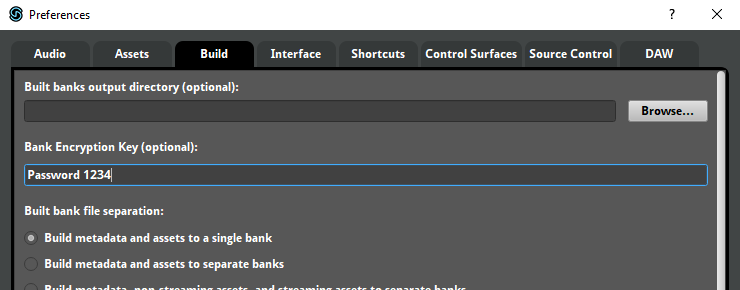
If your project has a bank encryption key, its bank files are encrypted using that key when you build the project. An encrypted bank file can only be loaded by a game project whose FMOD_STUDIO_ADVANCEDSETTINGS struct includes the correct encryption key as its encryptionkey member. For example, if you set your FMOD Studio project's bank encryption key to "Password 1234", your banks could only be loaded by a game whose FMOD_STUDIO_ADVANCEDSETTINGS struct's encryptionkey member was also "Password 1234".
Note that bank encryption is a deterrent that increases the difficulty of reading data from your banks. It can not stop players from playing your game and recording the audio.
16.18 Anonymous Usage Data
By default, FMOD Studio automatically collects data about which of its features you use and sends it to Firelight Technologies, the developers of FMOD Studio.
FMOD Studio doesn't collect any data that could be used to identify you or your game, and doesn't collect details that could be used to reproduce your project. For example, whenever you rename an event, FMOD Studio records that you renamed an event, but does not record the event's new or old name. Similarly, whenever you click and drag an automation point to a new location, FMOD Studio records that you dragged an automation point, but not where you moved it to or from.
The data collected from all of FMOD Studio's users is aggregated to reveal how frequently each of FMOD Studio's features is used. We use this information to help determine which new features and improvements we'll develop for future versions of FMOD Studio.
If you want to opt out of sending anonymous usage data, you can do so by selecting "Help > Welcome" to open the welcome dialog, then unchecking the "Allow collection of anonymous usage data" checkbox at the bottom of the dialog. Opting out of collecting anonymous usage data does not prevent FMOD Studio from sending log files and crash dumps to Firelight Technologies from the contact support dialog and crash reporter dialog.